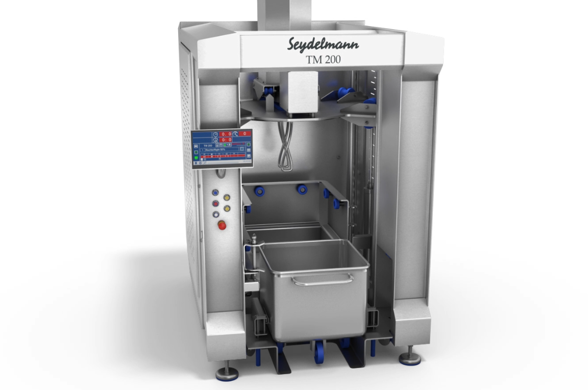
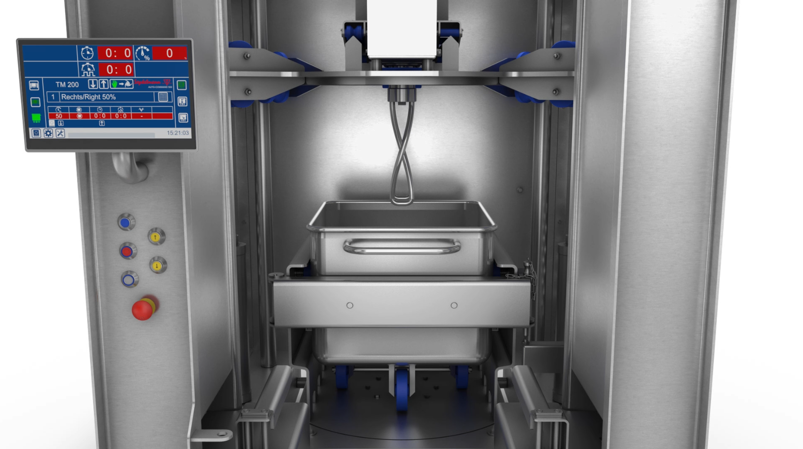
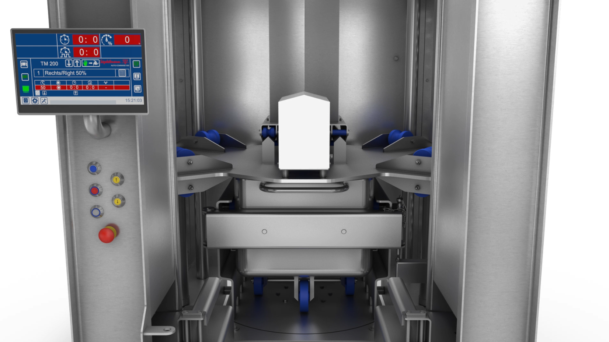
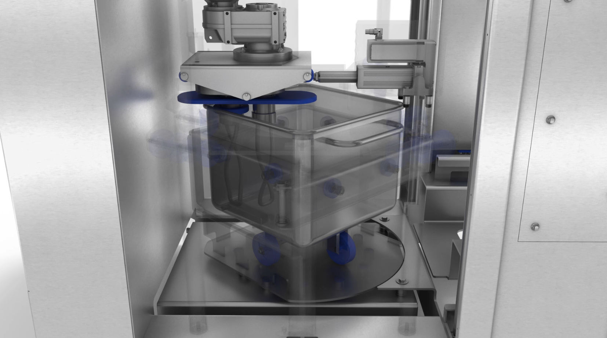
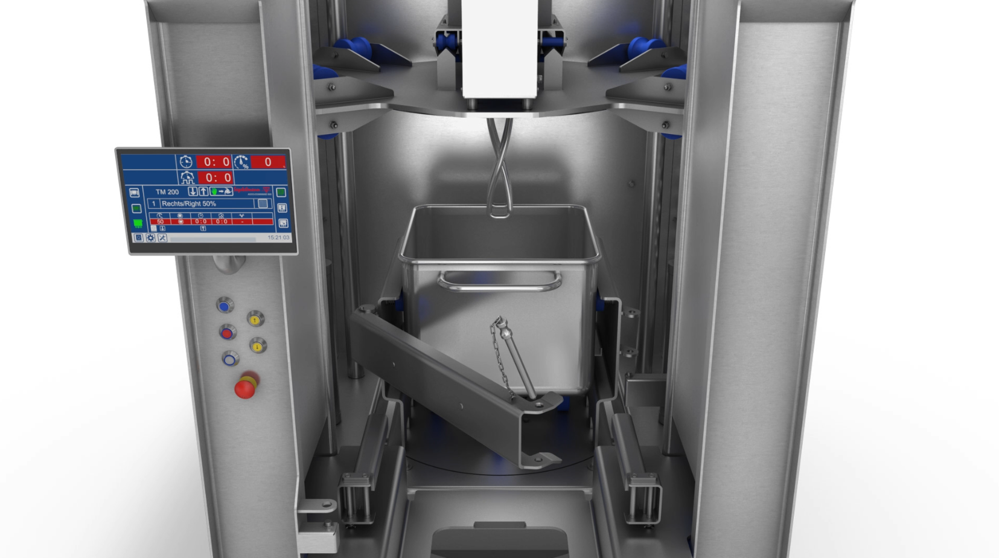
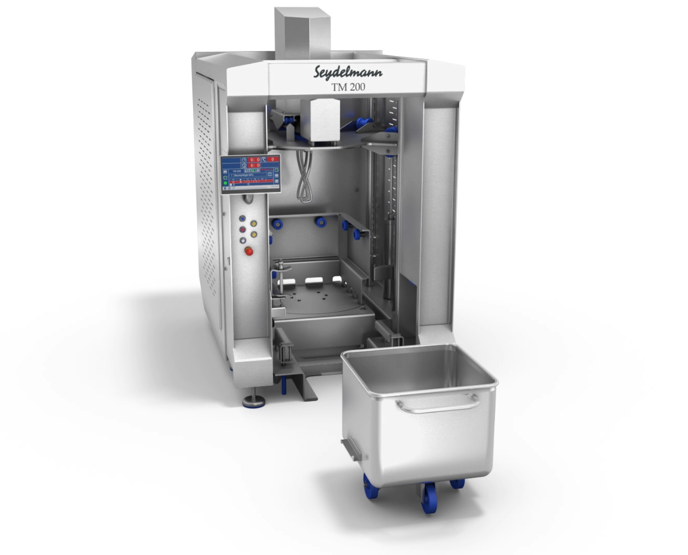

SEYDELMANN
ミートワゴン運用で混合工程を効率化。高粘度製品の混練から均一混合まで対応するミキシングシステム
SEYDELMANN トロリーミキサーは、ミートワゴン（200Lワゴン／300Lワゴン、欧州DIN規格トロリー）をそのまま混合容器として使用し、混合・混練・攪拌・乳化・起泡を行う食品加工機です。ミートワゴン運用により、原料の移し替え作業を削減できるため、洗浄工数削減、原料ロス低減、品種切替時間短縮、生産性向上に貢献します。ソース、惣菜、肉製品、生地製品、プラントベース食品などの均一混合や品質の標準化を支援します。
トロリータンブラーがマリネやタンブリングなどの製品にやさしい混合を得意とするのに対し、トロリーミキサーはミキシングツールを使用した強力な混合・混練を得意としています。






食品工場向けに衛生性と洗浄性に配慮した設計を採用しています。
導入テストから立上げ、アフターサポートまで国内スタッフが対応します。
SEYDELMANNは食肉、惣菜、乳製品、ベーカリー、プラントベース食品など幅広い分野で採用されている食品加工機ブランドです。
DINトロリー（ミートワゴン）をそのまま混合容器として使用し、混合・混練・攪拌・乳化・起泡を行う食品加工機です。
トロリータンブラーはマリネやタンブリングなどのやさしい混合を得意とする設備です。一方、トロリーミキサーはミキシングツールを使用した強力な混合・混練を得意としています。
ミートワゴンをそのまま使用できるため、原料の移し替え作業を削減できます。洗浄工数削減、原料ロス低減、品種切替時間短縮に貢献します。
原料ごとにワゴン管理ができるため、多品種生産への対応が容易になります。また移し替え工程や洗浄工程を削減できます。
はい。ソーセージ生地、ハンバーグ生地、パン生地など高粘度製品の混練にも対応できます。
はい。ニーディングアーム、ビームスターラー、プロペラディスクスターラー、ホイスク、ミキシングパドルなど用途に合わせて選択できます。
肉製品、惣菜、サラダ、ソース、乳製品、ベーカリー製品、プラントベース食品など幅広い用途に対応します。
はい。ミートワゴン単位で運用できるため、頻繁な製品切替にも対応しやすい構成です。
はい。LICでお客様原料を使用した実機テストが可能です。